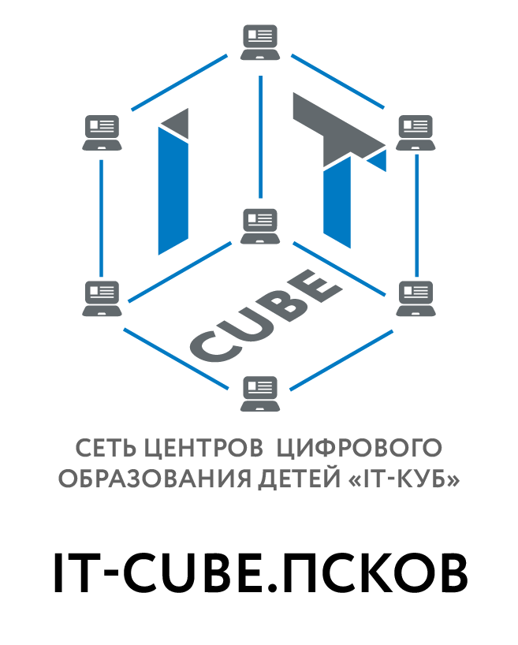

 "
Центр цифрового образования детей «IT-куб» — федеральный проект, реализуется в рамках национального проекта
«Образование» федерального проекта «Цифровая образовательная среда».
Целью создания центра цифрового образования детей «IT-куб» является — создание инфраструктурной площадки для
приобщения
учащихся к инновационной, практико-ориентированной деятельности в сфере информационных
технологий, робототехники и IT-инжиниринга.
Данный проект нацелен на популяризацию технических профессий, увеличение охвата учащихся IT-технологиями и
направлен
на раннюю профессиональную ориентацию.
Обучение предполагает реализацию совместных практических проектов с ведущими федеральными
и региональными
компаниями
и предприятиями реального сектора экономики, интеллектуальными партнерами, вузами.
По
дополнительным образовательным программам на базе созданного центра ежегодно будет заниматься более 400 детей в
возрасте 8-17 лет.
Обучение для детей бесплатное — за счет средств регионального бюджета.
Более 1500 человек
ежегодно будут принимать участие в мероприятиях, акциях, мастер-классах, воркшопах и т.д.